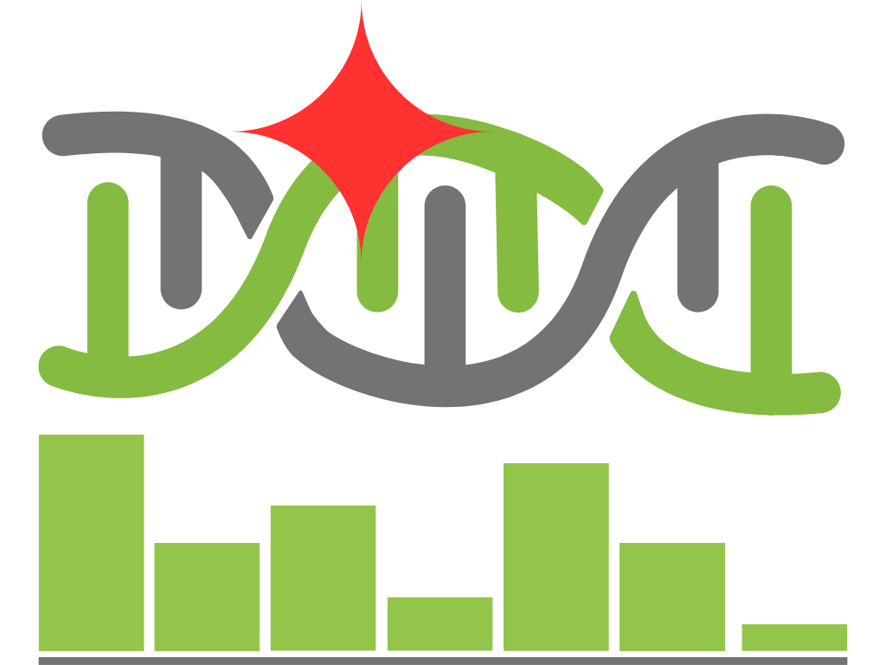
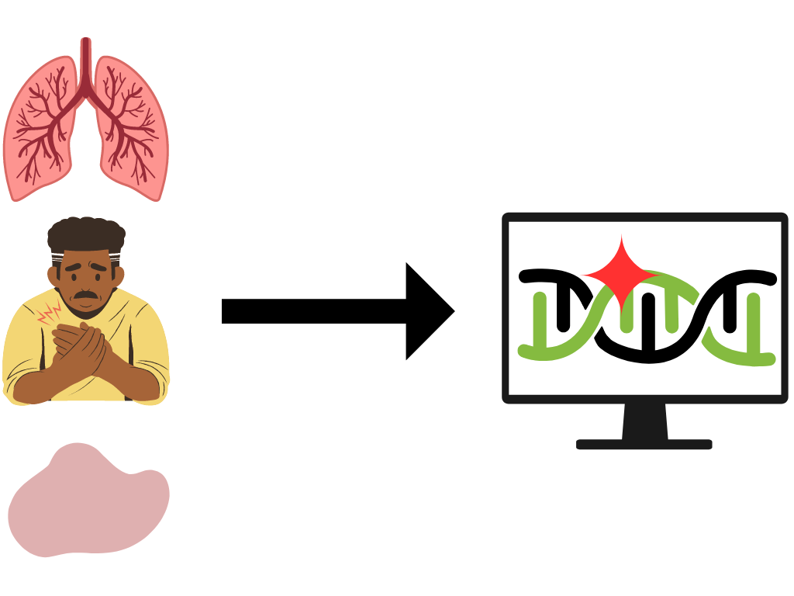
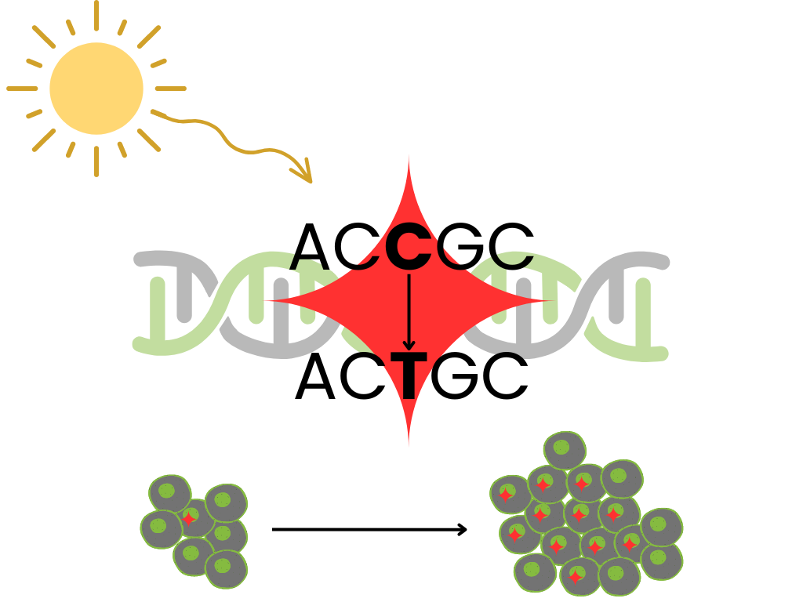
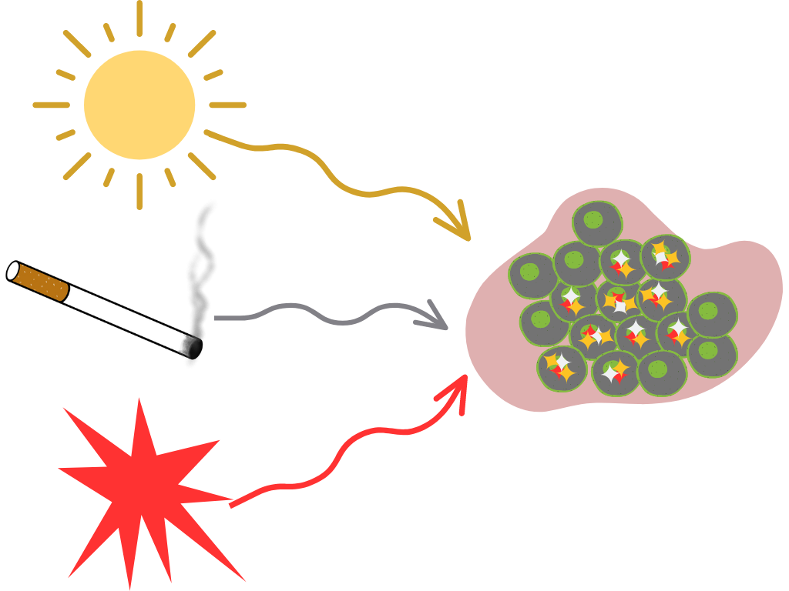
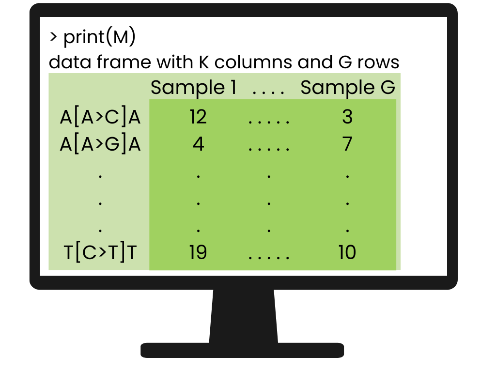
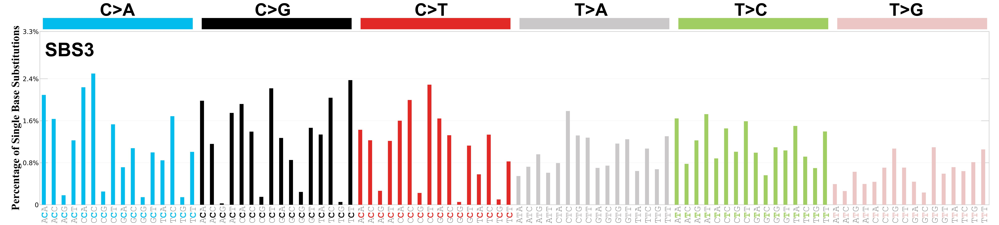

Getting Started with Mutational Signatures

Mutational signatures analysis models mutational processes in cancer with latent factors. This method characterizes cancer genomes in a way that is interpretable and clinically relevant. This article serves as an introduction to the biological motivation for mutational signatures and the statistical methods used.
Biological Motivation
Until recently, cancer diagnosis and treatment was based primarily on the tissue of origin, clinical presentation, and tumor morphology. The ability to sequence tumor DNA has changed this. The term “cancer” now refers to many diseases “differentiated on the basis of varying combinations of cancer gene mutations” (Baez-Ortega and Gori 2017).

Cancer is characterized by uncontrolled cell replication due to mutations in somatic, or non-germline, cells (Pfeifer 2010). There are some well-studied biological processes that lead to somatic mutations. For instance, in non-melanoma skin cancers, sunlight exposure leaves its trace through C-to-T transitions at dipyrimidine sequences and CC-to-TT tandem mutations. On the other hand, in smoking-associated lung cancers, we see G-to-T transversions, particularly at methylated CpG sites in TP53 (Pfeifer 2010). Other processes are not due to external exposures, including DNA damage repair deficiencies. However, we are still learning many processes that cause somatic mutations in cancer (Alexandrov et al. 2013).

Though they hadn’t yet been defined, Stratton, Cambelle, & Futreal perfectly summarized the biological motivation for mutational signatures in 2009 (Stratton, Campbell, and Futreal 2009):
the catalogue of somatic mutations present in a cancer cell … represents a cumulative archaeological record of all the mutational processes the cancer cell has experienced throughout the lifetime of the patient. It provides a rich, and predominantly unmined, source of information for cancer epidemiologists and biologists with which to interrogate the development of individual tumors
Mutational signatures analysis models a tumor’s mutational landscape as the composition of multiple mutational processes working at once.

Defining Mutational Signatures
Data: Mutational Catalog \(M\)
Most signatures work focus on single base substitution (SBS) mutations, though signatures have been developed for double base substitutions, small insertions and deletions, copy number variations, structural variation, and RNA single base substitutions (Tate et al. 2018).
For single base substitutions (SBS), a “type” of mutation is defined by the mutation and the nucleotides on either side. For instance, ACT > AGT has a C>T substitution (the mutation) with an A on the left and T on the right (the context). In the simplest case, we’re not concerned with which DNA strand the mutation was on, so we only consider substitutions at an A or a C. This gives six options for the substitution A>C, A>G, A>T, C>A, C>G, C>T, four options for the nucleotide on the left, and four options for the nucleotide on the right, giving 6 ⋅ 4 ⋅ 4 = 96 SBS mutation types. We use base-pair matching to convert mutations at a T or a G into one of these 96 mutation types.
A tumor’s mutational catalog is its count of each mutation type. The catalog for each tumor genome \(g\), \(M_{g}\), is a vector of length 96. The full mutational catalog matrix \(M\) has dimension 96 x G where G is the total number of tumor genomes, and tumors’ catalogs are columns.
\(M\) = Mutational catalog matrix, our observed data
\(M_{kg}\) = counts of mutation type \(k\) present in tumor genome \(g\)

Latent Factors: Mutational Signatures \(P\)
A mutational signature is a mathematical representation of a mutational process. A signature defines how likely the mutational process is to give rise to each type of mutation. Mathematically, signature n, denoted \(\mathbf{P_n}\), is a probability distribution over these mutation types. The full signatures matrix P has dimension 96 x N where N is the total number of signatures, and signatures are columns.
\(P\) = Signature matrix, our latent factors representing mutational processes
\(P_{kn}\) = probability of mutation type \(k\) resulting from mutational signature \(n\)
\(P_{kn}\) = Pr(mutation type k | signature n) such that \(\sum_k P_{kn} = 1 \forall n\)
A common way to visualize individual signatures is as a bar plot of these probabilities, grouped based on the central single base substitution, each with 16 options for context. Below is this type of plot for one signature, COSMIC SBS3.

Statistical Methods
In order to model mutational signatures, we need to convert our biological motivation about mutational processes into a mathematical expression using our mathematical definition of mutational signatures.
Biologically, we said
a tumor’s mutational landscape is the composition of multiple mutational processes working at once.
Mathematically, we can say
a tumor’s mutational catalog is a linear combination of multiple mutational signatures.
The weights of this linear combination are defined by a matrix \(E\), where \({E}_{ng}\) is the number of mutations in tumor genome g attributed to mutational signature n. \(E_{ng}\) is often called the exposure of tumor genome g to mutational signature n or equivalently the contribution of mutational signature n to tumor genome g. This definition simplifies to the expression
\[M = PE.\]
Because \(M\) is a counts matrix, and \(P\) a matrix of probabilities, both are inherently non-negative. We define \(E\) as non-negative as well, because mutational processes can only add mutations, not get rid of them1. Although we originally defined signatures \(P_n\) as probability distributions summing to one, we can rescale matrices after the fact rather than incorporating the additional constraint here.
\[ \begin{aligned} M_g =& \sum_n P_n E_{ng}\\ M = PE, &\text{ all non-negative} \end{aligned} \]
We’ve turned the biological idea of mutational signatures into a simple matrix decomposition \(M = PE\) with all non-negative matrices. This can be solved with non-negative matrix factorization (NMF).
Interpretation
Footnotes
The use positive weights for mutational signatures is different from other matrix decomposition or dictionary learning applications to genomics. For example, if we were looking at RNA-seq data, a mutational process may increase or decrease gene expression, so negative weights would be allowed.↩︎